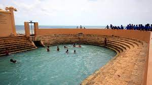
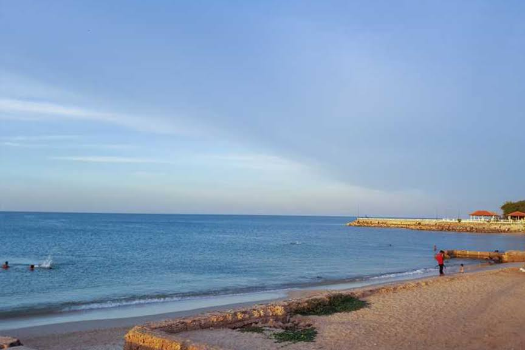
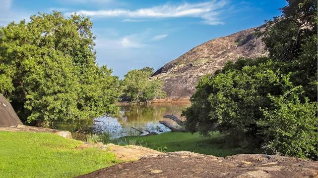
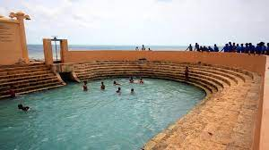
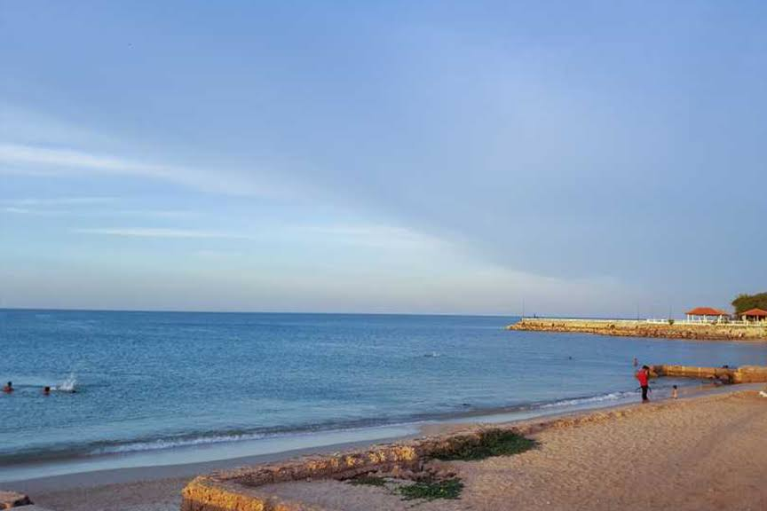
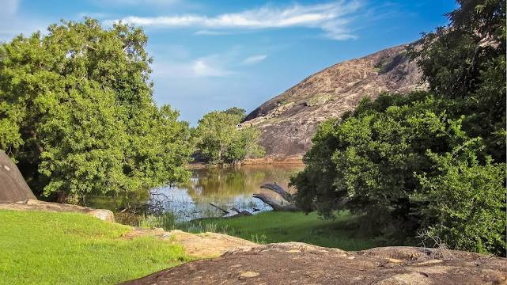
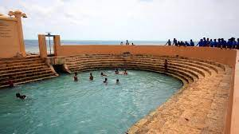
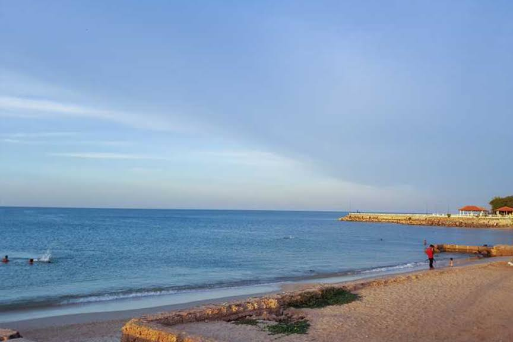
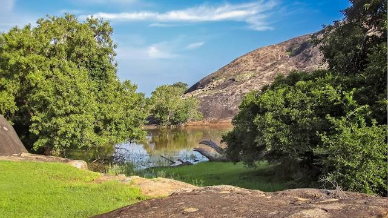

The Northern Province of Sri Lanka is comprised of five administrative districts: Jaffna, Kilinochchi, Mulaitivu, Vavuniya and Mannar while Jaffna being the provincial capital which is the administrative headquarters of the Jaffna districtlocated on a peninsula of the same name.The Northern ProvinceNorthern Province is located in the north of Sri Lanka just 35 km from India. It has a land area of 8,884 km’. The province is surrounded by the Gulf of Mannar and Palk Bay to the west, Palk Strait to the north west, the Bay of Bengal to the north and east and the Eastern, North Central and North Western provinces to the south. The Northern Province of Sri Lanka is comprised of five administrative districts: Jaffna, Kilinochchi, Mulaitivu, Vavuniya and Mannar while Jaffna being the provincial capital which is the administrative headquarters of the Jaffna districtlocated on a peninsula of the same name. Jaffna is approximately six miles away from Kandarodai which served as a famous emporium in the Jaffna peninsula from classical antiquity. Jaffna’s suburb, Nallur served as the capital of the four centuries-long medieval Jaffna kingdom. Prior to the Sri Lankan civil war, it was Sri Lanka’s second most populated city after Colombo. But due to the Tamil insurgency, the city tended to depopulate. Since the end of civil war in 2009, refugees and internally displaced people are returning to their homes and government and private sector reconstruction has begun.


